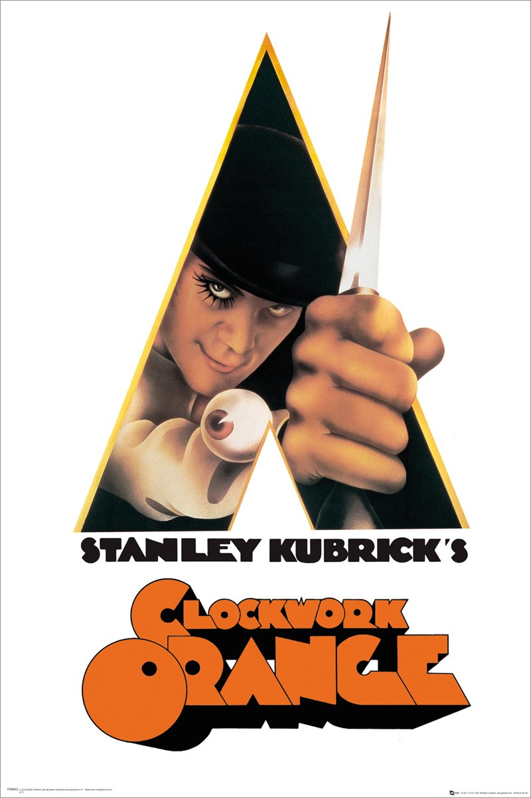
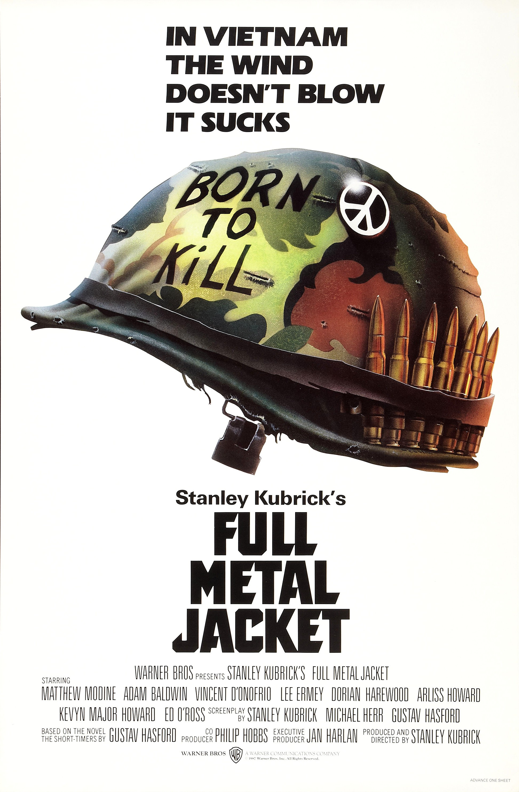
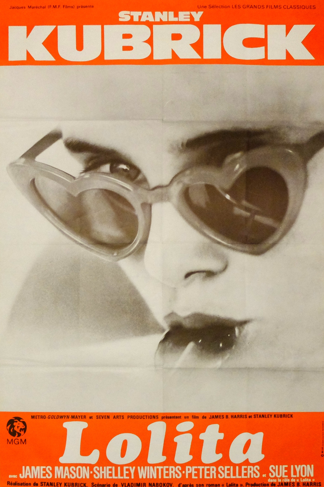

Maria Callas
Opera Singer @Teatro alla Scala
After 10 years as a Mechanical Engineer, I decided that life was waaay too short. I am now a Soprano singing everywhere in the world. My mission: Make opera accessible 2 everyone.
Best movies ever!
|  |
A Clockwork OrangeA Clockwork Orange is a 1971 dystopian crime film adapted, produced, and directed by Stanley Kubrick, based on Anthony Burgess's 1962 novel of the same name. It employs disturbing, violent images to comment on psychiatry, juvenile delinquency, youth gangs, and other social, political, and economic subjects in a dystopian near-future Britain. |

|
ScarfaceScarface is a 1983 American crime film directed by Brian De Palma and written by Oliver Stone. The film tells the story of Cuban refugee Tony Montana who arrives in 1980s Miami with nothing and rises to become a powerful drug kingpin. |
|  |
Full Metal JacketFull Metal Jacket is a 1987 war film directed and produced by Stanley Kubrick and starring Matthew Modine, R. Lee Ermey, Vincent D'Onofrio and Adam Baldwin. The screenplay by Kubrick, Michael Herr, and Gustav Hasford was based on Hasford's novel The Short-Timers (1979). |
|  |
LolitaLolita est un film britannique de Stanley Kubrick, sorti en 1962. C'est l'adaptation du roman éponyme de Vladimir Nabokov publié en 1955. Humbert, professeur de littérature française, cherche à louer une chambre pour l'été dans le New Hampshire... |